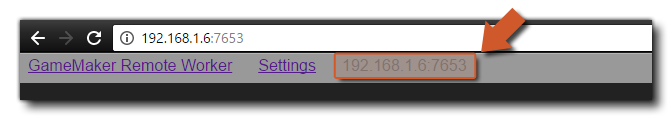
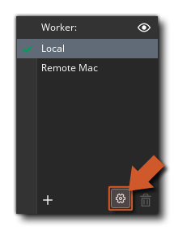

编译游戏时，通常使用 “本地” 工作程序，即安装了 GameMaker Studio 2 的计算机。但是，在某些情况下，你可能需要使用另一台计算机来构建项目。例如，如果你正在使用 Mac 并且想要构建 Windows 项目，那么你可能希望配置 远程工作者 并让 Windows PC 执行构建。基本上，当你使用远程工作者时，GameMaker Studio 2 会将其运行的（本地）计算机上的所有必需文件发送到远程工作计算机，然后使用该计算机为项目构建最终可执行文件（保存它在远程机器上，或之后将其返回到本地机器上）。但是，在使用此功能之前，你必须在构建计算机上安装某些工具并执行一些设置，我们将在此处解释。
要设置远程工作者，你需要首先将远程工作者构建工具应用程序安装到要使用的 PC 上。 你可以通过点击本地计算机上 GameMaker Studio 2 中的 构建 菜单并选择 “显示远程工作者安装程序” 选项来找到此工具：
或者，你可以单击 目标平台管理器 中的 “眼睛” 图标，然后以这种方式获取远程工作者安装程序：
安装程序将被称为 “GameMakerStudio-Remote-Installer-X.X.X.XXX.exe”，你需要将其复制到要用作远程工作者的 PC（你 不 需要安装 GameMaker Studio 2，只需要安装这个程序）。将其复制到构建 PC 后，按照屏幕上的提示进行安装，安装完成后，操作系统可能会要求你通过防火墙访问网络。 授予访问权限后，安装程序将在你的 Web 浏览器中打开一个页面，你 必须记下此页面上显示的 IP 地址和端口号，因为下一步将需要它。 
你现在需要返回安装了 GameMaker Studio 2 的计算机，然后单击目标平台管理按钮 打开目标平台管理窗口，然后转到 工作者 部分并单击 添加工作者 按钮。然后，这将打开以下窗口：
在这里，你需要为远程工作者命名（这将在目标平台管理的 “工作者” 列表中显示），然后在 主机名 部分中，添加你之前从工作者计算机上显示和记录的地址及端口号。
如果一切正确，你现在应该收到一条消息，说明你可以成功连接到远程工作者计算机。 安装远程工作者并连接到主 IDE 计算机后，你需要先为每个平台设置 本地构建设置（请参阅下面的部分以获取更多详细信息），然后才能编译项目。
设置页面显示远程工作者应用程序的不同路径和构建设置。 在设置的顶部，你有远程工作者应用程序将使用的不同路径，在执行任何其他操作之前，应根据需要修改这些路径并将其设置为备用路径（通常，默认路径应该没问题）。你可以使用以下任一方法访问 “远程工作者” 设置页面：
- 单击远程计算机浏览器中打开的 “远程工作者” 页面顶部的 “设置” 链接：
- 使用远程工作者托盘图标上的鼠标右键菜单打开远程计算机浏览器中的设置：
- 在本地计算机上，打开目标平台管理器，然后单击 “cog” 图标
，在本地计算机的窗口中打开工作者设置：
这将显示设置页面，你可以在其中查看（和设置）允许你设置构建项目的路径的不同选项：
在检查要使用的远程工作者应用程序的路径之后，你可以设置（如果需要）不同的 本地构建设置。不同的平台需要在构建 PC 上安装不同的构建工具，远程工作者需要能够通过 “设置” 页面使用它们来构建游戏。这里的第一个设置是 常规 设置：
你可以在此处设置帮助服务器的端口和调试器要使用的端口。如果在使用调试模块时遇到任何连接问题，可以更改这些，但通常应保留其默认值。
你现在可以继续为远程工作者可以为其构建的平台设置不同的选项：
- Windows

如果你可以访问 Windows 目标平台，则应该能够使用 VM 选项立即使用 Windows PC 上的远程工作者进行构建。但是，如果你希望使用 YYC，则还需要在构建 PC 上设置 Visual Studio 的路径。 有关如何设置 Windows PC 以编译项目的完整详细信息，请参阅以下帮助台文章：
一旦你设置了远程工作者并完成了本地构建设置（请参阅上面的部分），你就可以开始使用它来编译游戏了。为此，只需从目标平台管理器列表中选择远程工作者，选择要测试 / 编译的平台，以及任何其他选项（如编译类型或配置），然后按 运行
或 创建可以执行程序
。
注意：目标平台管理器中的可用平台将根据远程工作者计算机的功能而更改，并非所有目标平台都可用。另请注意，远程工作者没有 “测试” 目标。
如果你只是在运行项目，那么远程工作者计算机将编译并运行它，但如果你要创建可执行文件，则远程工作程序将编译该项目，然后将 *.zip 文件返回到本地计算机以进行保存。应该注意的是，使用远程工作者时，调试按钮
和 清理
按钮都不可用。另请注意，你目前同时只能执行 一次 远程构建。


在远程计算机上安装并运行远程工作者后，它将作为图标显示在任务栏中，你可以右键单击它以显示以下选项：

- 打开：在默认浏览器中打开远程工作者应用程序。
- 显示日志：在浏览器中打开远程工作者的日志文件。
- 网络设置：你可以在此处过滤希望能够将构建发送到远程工作者计算机的计算机。每个过滤器可以是 CIDR 样式 过滤器或允许的机器主机名。你应该知道，如果你希望多台计算机连接到一个远程工作线程，或者你正在混合连接类型（即：有线和 wifi），那么你可能需要在此处编辑 IP 允许范围。
- 编辑设置：打开 “远程工作者” 设置菜单（在上面的 设置 部分中进行了说明）。
- 退出：退出远程工作者应用程序。这意味着在重新启动远程工作者应用程序之前，你无法再从本地计算机连接（或编译）应用程序。